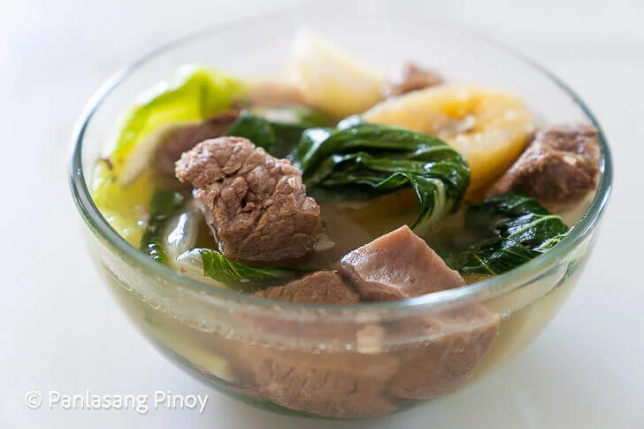

Home
Nilagang Baka

One of the major factors of appeal for Nilagang Baka is that it boasts a generally mild
flavor that is far from overpowering.
While a great deal of savory Filipino dishes show off a strong taste, this has subtle
notes of savor in its beef broth, salt and pepper./p>
It makes use of sim ple seasonings to bring the best out of its many ingredients.
Ingredients
- 2 lbs. beef sirloin cubed
- 2 bunches baby bok choy or pechay
- 1 piece cabbage
- 6 pieces Saba banana halved
- 4 pieces baking potato quartered
- 1 piece white onion halved
- 4 staks celery chopped
- 1 piece star anise optional
- 4 cups beef broth
- 4 cups water
- Salt and pepper to taste